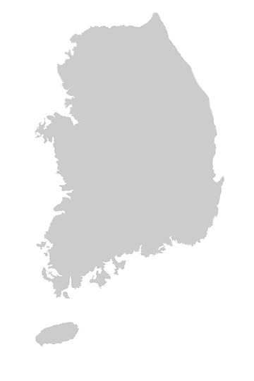

대우조선해양의
위치를
안내해드립니다.
대우조선해양은 관계사 및 고객사와의 접근성이 높은 해양 지역에본사를 두고 상선의 생산이 용이한 거제도 내 생산시설을 갖추어 사업운영에 있어 업무적 / 지리적 효율성을 극대화하고 있습니다.

대우조선해양 본사
- 종각역 1호선
- 우정국로 253m 직진
- 다동길 우회전 후 24m 이동
- 대우조선해양 본사
- 을지로입구역 2호선
- 다동길 좌회전 후 24m 이동
- 대우조선해양 본사